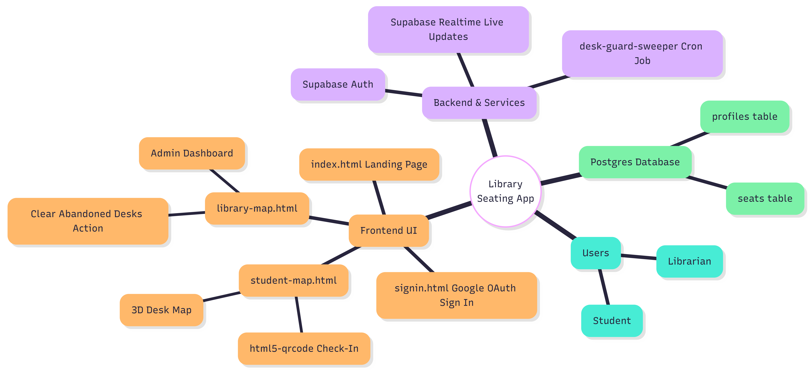

Track desk occupancy in real time, stop hoarding, and release unused seats automatically so students can study fairly.
Built for scale, engineered for fairness. DeskGuard utilizes robust logic to ensure maximum resource availability.

A high-performance WebGL 3D digital twin of your library floor. Students can instantly visualize available collaborative pods and quiet zones before they even arrive.
Background server cron jobs constantly monitor active sessions. Desks abandoned for over 20 minutes are automatically cleared and released back into the available pool.
Interactive "Still Here?" prompts require active verification for long study sessions. Integrated QR simulation ensures physical presence is required to claim a workspace.
A seamless, logic-driven lifecycle from reservation to release.
Students access the 3D map to view live floor capacity. Green indicators highlight free desks across different library zones.
Upon arriving at the physical desk, the student scans the QR code. The system locks the desk and updates the spatial ledger to "Occupied".
Need a break? Students trigger the "Away" state. The backend timer allows exactly 20 minutes before flagging the desk for review.
If the Away timer expires, or if the student ignores the 2-hour presence check, the system automatically marks the desk as "Abandoned" and frees it.